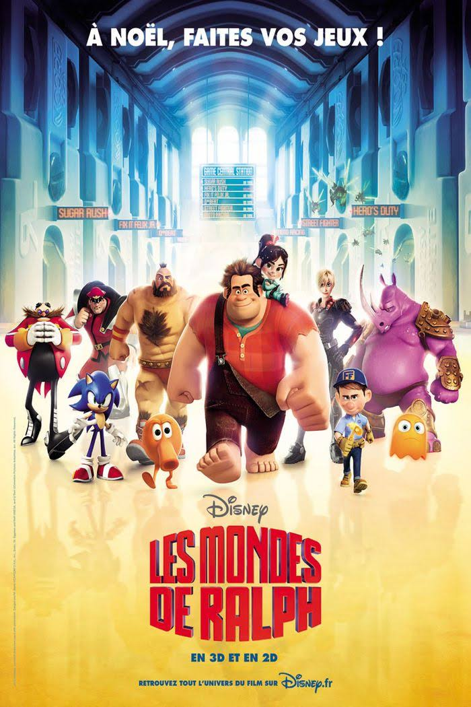

TENDANCES
| Tendances Jeux vidéos | Tendances Films | Tendances Livres | Tendances Musiques |
LES NOUVEAUTES
 |
 | |||
| The World Ends With You - Jeu Vidéo - Nintendo DS | Les mondes de Ralph - Film - Disney-Pixar | One Piece Tome 87 - Livre - Mangas | Saosin - Musique - Hard Rock | Super Smash Bros. Ultimate - Jeu Vidéo - Nintendo Switch |
LES EMPRUNTS
Emprunteur |
Titre de l'article | Catégorie | Date de l'emprunt |
| Jonathan | Les mondes de Ralph | Film - Disney-Pixar | 04/10/2018 |
| Maxime | Saosin | Musique - Hard Rock | 04/09/2018 |
| Camille | The World Ends With You | Jeu vidéo - Nintendo DS | 04/08/2018 |
| Kenny | One Piece Tome 87 | Livre - Mangas | 04/07/2018 |
| Angélina | Super Smash Bros. Ultimate | Jeu Vidéo - Nintendo Switch | 04/06/2018 |
| Nombre d'emprunts totaux : 5 | |||